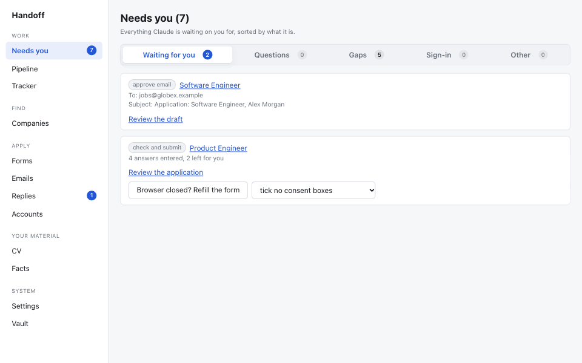

Handoff
Apply for jobs with Claude Code. A local-first AI job application assistant that does the tiring work and hands every irreversible step back to you.

What it does
- Find jobs on the sites you choose and check each one is still open.
- Tailor your resume and cover letter using only facts you wrote. Every claim cites a fact.
- Apply by email or form. It drafts the email and fills the form, then stops for you.
- Track replies from your mailbox (read-only) and remind you to follow up.
How it stays safe
The assistant cannot send, submit, create accounts, type passwords or read your vault. Everything runs on your computer in one SQLite file, with a dashboard on 127.0.0.1.
Get started
Handoff is open source (MIT) and currently tuned for developer roles. Setup takes a few commands; see the quick start.